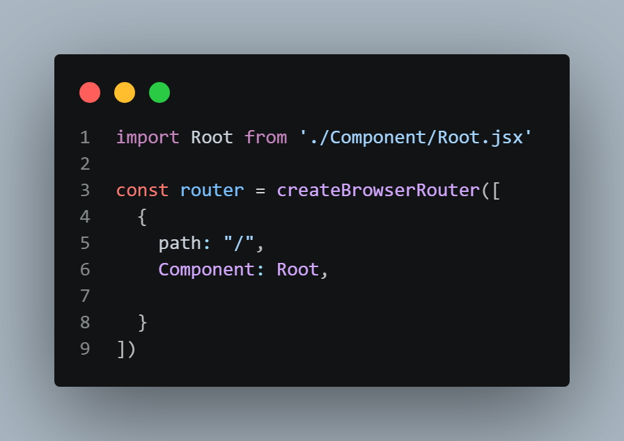
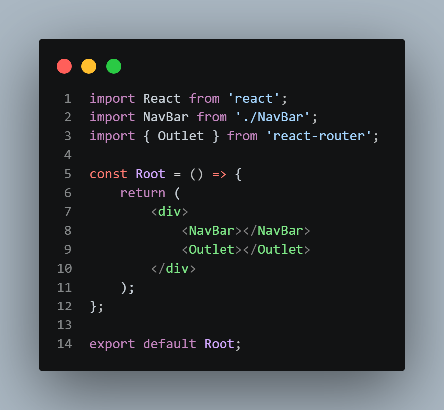
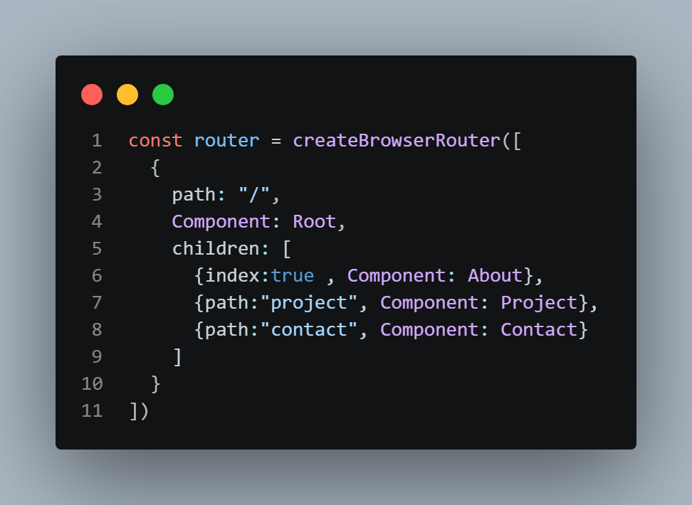
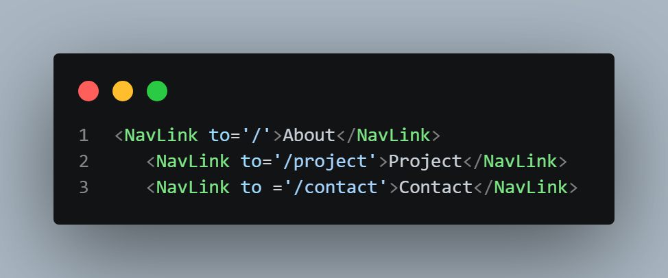
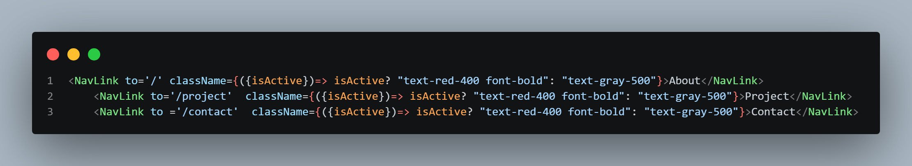

✔️Setting up React Router
1️⃣After making a vite project, go to React Router website. And according to documentaion(Data Mode) paste npm i react-router on the VSCode bash terminal.
2️⃣The according to documentation write the code like the one below in main.jsx---

As you can see, the App component got replaced by RouterProvider Component.
✔️Nested Routing
1️⃣Make a component folder in src
2️⃣Make Root.jsx, NavBar.jsx
3️⃣In main.jsx---

4️⃣In Root.jsx there is NavBar Component (this is static) and Outlet component. The Outlet component shows the children dynamically---

5️⃣Make About.jsx, Project.jsx, Contact.jsx in the component folder. Then in main.jsx---

6️⃣We can use Link to too but for this example I used NavLink to in NavBar.jsx---

7️⃣Only NavLink can be styled (not Link). Useful in toggling---

Data Loading--->
{
path: mobiles,
loader: () => fetch("api"),
component: Mobiles
}
then go to mobiles.jsx ---> const mobile = useLoaderData();
using element we can add Suspense and we fetch data as ususal in React
Dynamic Routing--->
{
path:users/:userId,
loader: ({params}) => fetch(`api/${params.userId}`),
component: UserDetails
}
(dyanmically getting users/1, users/2 etc)
then in Users.jsx componnet we have a Link to = {`/users/${user.id}`}
then in UseDetails.jsx--> const user = useLoaderData();
useNavigate
for a 404 ereor use path:'*'